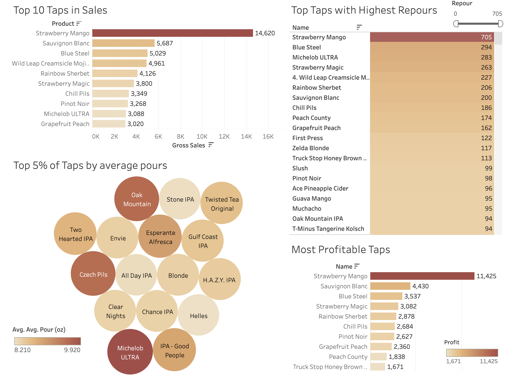
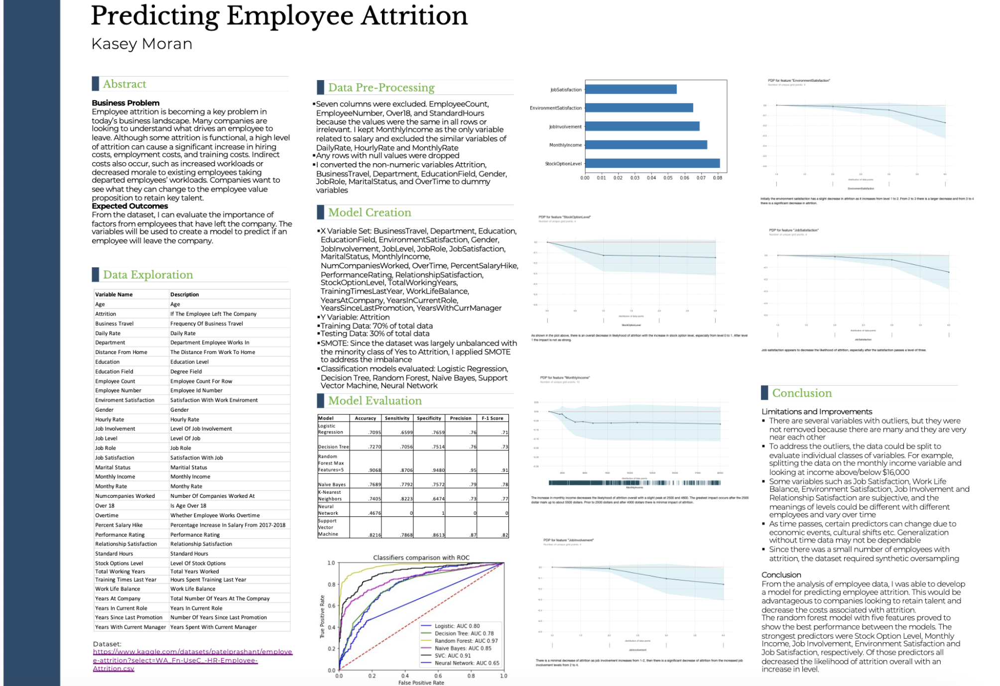

In Python I evaluated the importance of factors from employees that have left a company. The variables
were used to create a model to predict if an employee will leave the company.
This project describes what factors contribute to the quality of wine. These factors can be of high significance to a wine producer looking to improve the quality of their wine or a seller looking to sell only the best wines to their consumers.
A database I created with tables in MySQL Workbench for Allen Academy. They wanted to convert their manual records into a database.
Requirements: Student information(name, address, class, homeroom, home
& parents' work phones, medical info, grades, extracurriculars, current schedule, tuition payment)
Course information(name, location and time. One section per course)
Teacher information(name, address, highest education level, date degree earned/institution, salary, schedule, time/place of class)

This study aimed to determine which variables are the most significant contributors to morality in COVID-19 cases. The analysis was performed in JMP based on CDC data.